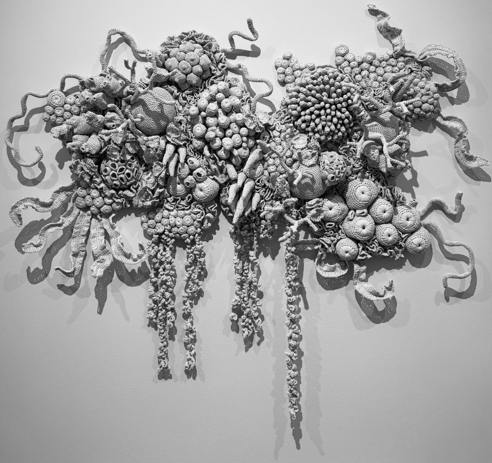

I'm on the hunt for a decent pastrami reuben and have been met with significant setbacks. Supposedly Fat Dan's is my best bet in town. We met up with some friends on the weekend to try it out, only to be immediately turned away. They were closing at 6:30pm because the kitchen staff walked out. Odd. Certainly does not bode well for this establishment. Later on in the week I discovered the local bagel stop seemingly sells pastrami sandwhiches. I stopped in and paid an obscene $18 for 6oz of meat. After handing sandwhich to me, they announced in no uncertain terms that I had just purchased the very last pastrami sandwhich they will ever sell. The worst part was, the sandwhich was quite good.
The record high for Bloomington on any March day for all of recorded history was 82 degrees. We hit 87 degrees on March 17th.
04E
I traveled to Las Vegas for a work conference. It was my frist time in the city of sin, it's not a place I can exactly let loose in. For me, that would entail getting away from the lights and sounds and parties and out to the desert mountains and hills. Nevertheless it was a fun way to view fringes of the human experience. Much like visiting a zoo, I enjoyed the spectacle and the flow and function of these hairless bipeds roaming around their playground.
The conference itself was enjoyable. I had fun hanging out with my friend (and now boss) again. Meeting and talking to our customers gave me a tangible sense of obligation and a new drive to continue to build.
04D
We had our first tornado warning of the year. Around 9pm our phones and weather radio started sounding off, screeching to find shelter immediately. Ashley and I gathered up Renna and sat on beach chairs in our basement while wind whipped rain, hail, then rain again against the walls above us. I was watching the live weather radar on my phone and could see the telltale sign of aloft rotation: a tightly confined region where the wind velocity is indicated to be moving rapidly towards the radar source right next to wind moving rapidly away. It was about two miles from us. Ten minutes later it had passed and we came out from underground. In the following hours we saw picture of the surveyed damage, a pet shelter and bank had been hit, a 5 minute drive from us. No one was injured. The tornado was rated an EF2.
04C

Mulyana - Bleached Coral
We visited the Mulyana exhibit opening at the IU art museum. Mulyana is an Indonesian contemporary artist renowned for his large-scale knit and crochet installations. This exhibit focused on the health of underwater ecosystems, coral, and coral bleaching. I was particularly taken by a wall-sized piece of beautifully intricate crochet'd coral made from white plastic bags. The effect was an incredibly realistic bleached coral with a wonderful desaturated effect that really tickled my appreciation for light/shadow play.
I also had a chance to check out Ashley's installation in the Tangent gallery along with some of her colleagues. While there, a woman popped her head in and was introduced to us as the person who hand knitted the sweaters worn by the characters in Coraline. She uses medical-grade stainless steel sutures as knitting needles.
I've procured an early 00s CD/Tape boom box and have been joyfully listening to my daily NPR and local Bloomington punk station. I've also finally begun the transition away from Spotify to physical CDs. I bought a second-hand external CD drive and a batch of blank CD-Rs and have been burning as much as my library as I can. I love the feeling of ownership over my music and the physicallity of being able to hold songs in my hand.
This Milan Winter Olympics began this jaunt. I really like that Ashley and I are both in natural agreement to simply have the live broadcast on 24/7.
04B
We had our first big snow, a massive storm extending across the majority of the country. I had been tracking the storm via my usual Youtube weather guys for a week prior. I was anxious that we'd end up on the freezing rain side of things and really be in for some trouble. Luckily we ended up on the snow side, just barely. Unluckily this meant we got crushed with snow, 14 inches. It fell all day Sunday and we had a pleasant time hunkering down, watching movies and relaxing. I spent the next several days shoveling snow, 20 minutes at lunch, 30 after work. The prioriy order was: get the sidewalk cleared the cars dug out, then a path for the garbage cans. This storm came from a more frequent weather phenomenon in which the polar vortex breaks down and arctic air is pinned over North America. Even a week after the storm the temperature has not risen above 25 degrees.
I've taken a new approach to my remote working, spurred on by my new job and a more settled life here in Bloomington. I'm enjoying remote work more than I was a few months ago I think partly because I am doing something new and partly because the weather prevents me from wishing I was commuting elsewhere. I am happy being steady, stable, and able to get good work done while maximizing my use of my new-found free time in the morning and evenings. I have felt a renewed drive in my mandarin studies and I am making sure to lean into it slowly rather than pushing myself to log everything and make flash cards and watch shows and everything else I was trying to do before. Now, I can bask in my routine and stick firmly to it. Wake up 7:15am, make breakfast and coffee, Duolingo daily tasks complete over coffee, work, run or HIIT, dinner with Ashley over conversations or shows, HelloChinese done by 9:30pm, bed by 11pm.
04A
Hard to believe a year ago I had no idea I would be packing my things and leaving Philly for the small-town Indiana life. I had not yet been to China, hadn't quit my job. A lot can happen in a year. Much as happened so far in the 4th year of the wiki, though the stand-out moments are starting my new job as a Director of Engineering and running a 10 mile trail race.
My job is, so far, quite fun. I have a sense I am simultaneously out of my depth and fully capable of making some rapid important change in the company. I wont talk much details here still as I think it does a diservice to myself and to report on only the first steps of a grand adventure. That said, I am happy to be there, I think it was the right move, and I'm looking forward to what's in store.
The trail race was the 10 mile fun-run of the Frozen Morgan Monroe Forest (FroMoMoFo). I felt particularly underprepared for this race, I had not broken 7 miles on road for a year and a half leading up to this and nothing more than 5 miles on trail. Trail races are more difficult than road races because of the rolling hills giving significant elevation gain. So the FroMoMoFo fun-run ends up being 10 miles and climbing a 150 story building. I was sore after this one. Both my quads were busted for 3 days. I was able to get my Monday and Wednesday run in (the race was on Sunday), shuffling along, heavy legs. One of my favorite things about these hard races is watching my body build itself back. It's somehow able to pull itself from the edge of ruin and, a week later, I'm back to normal.
Clean out clothes and donate most.
Make a physical media library of my favorite music; collect cassettes.